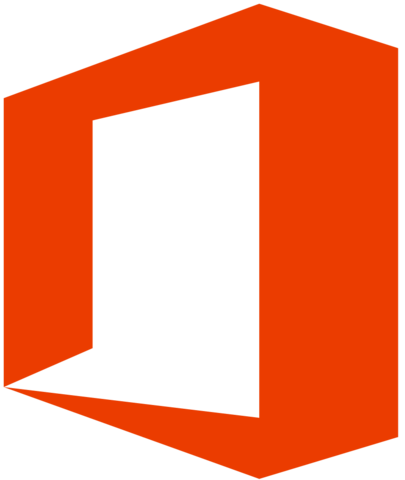
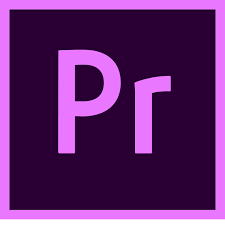

0
0
0
0
0
0
0
0
0
0
0
Festival de instalación
En esta actividad te podemos ayudar a instalar software libre en tu equipo
de manera gratuita y totalmente legal. Consulta la
lista de software
disponible a instalar.
Si te interesa instalar un sistema operativo libre
junto con algún
otro sistema te recomendamos
desfragmentar
el disco duro de tu equipo,
así como realizar un respaldo de tu información.
Te esperamos en la explanada del CeDeTec de 11:00 a 3:00.
alternativas
libres al
software comercial

- Es el sistema operativo más popular en el mundo.
- Fácil manejo e instalación de dispositivos.
- Gran compatibilidad con hardware existente en el mercado.

- Es muy robusto, estable y rápido.
- Ideal para servidores y aplicaciones distribuidas.
-
No está restringido a personas con grandes conocimientos
de informática.

- La mayoría de las empresas lo utilizan.
- Es software completo al realizar diversas tareas.
- Microsoft ofrece asistencia en linea para sus productos Office.

- Programación de macros mediante lenguajes como Python.
- Multiplataforma, funciona en GNU/Linux, Windows y Mac.
- LibreOffice se distribuye de manera gratuita.

- Te ayuda a corregir fotos con problemas de exposición.
-
Se utilizan para eliminar elementos que no desean incluir
en sus imagenes. -
Facilita la edición de fotos y permite ilustrar digitalmente con una gran
cantidad de herramientas bajo el mismo software.

- Gimp se puede obtener de manera gratuita, no requiere pago de mensualidades.
- Esta disponible para múltiples sistemas operativos.
- Ocupa muy poco espacio en el disco duro.

- La mayoría de las aplicaciones son gratuitas.
- La descarga de aplicaciones es segura, en ocasiones las aplicaciones no lo son.
- Viene instalado por defecto en la mayoría de dispositivos.

- No obliga al usuario a crear una cuenta para descargar software.
- Las aplicaciones brindan mayor libertad, privacidad y transparencia al usuario.
-
Se pueden compartir aplicaciones por Bluetooth, sin necesidad
de una conexion a internet.

- Permite importar todo tipo de formatos: jpg, gif, psd, mp3, mp4, etc.
- Software popular.
- Compatible con Mac y Windows.

- Gratuito y multiplataforma.
-
Es capaz de manipular cualquier formato y hace que no
sea obligatorio convertir los videos antes de editarlos. -
Este programa es muy versátil y permite editar material de cámaras DV,
HDV y AVCHD.
.
¡¡Participa en

¡¡Participa en
el torneo de xonotic!!
26/04/2020
00:00 - 00:00
Xonotic es un videojuego de disparos en primera
persona. Es software libre y fue desarrollado
como un fork de Nexuiz.
En las FES Acatlán se llevara a cabo
el torneo como parte de las actividades de FLISoL 2019.
IMPORTANTE:
No olvides hacer tu resgistro del torneo en la entrada del Centro de computo máximo una hora antes de iniciar el mismo.